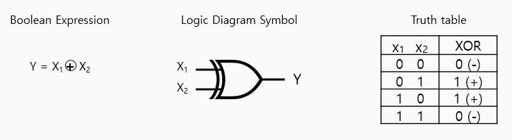
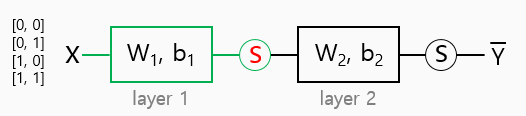
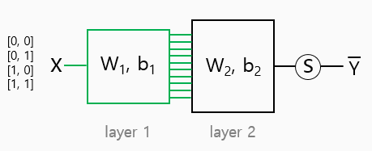
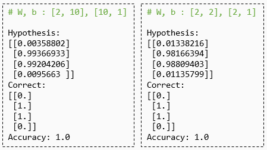
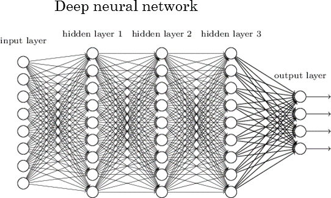
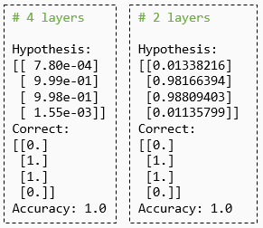

XOR data set

x_data = np.array([[0, 0], [0, 1], [1, 0], [1, 1]], dtype=np.float32)
y_data = np.array([[0], [1], [1], [0]], dtype=np.float32)XOR with logistic regression?
xor.py
# Lab 9 XOR
import tensorflow as tf
import numpy as np
tf.set_random_seed(777) # for reproducibility
l_r = 0.1 # learning_rate
x_data = [[0, 0], [0, 1], [1, 0], [1, 1]]
y_data = [[0], [1], [1], [0]]
x_data = np.array(x_data, dtype=np.float32)
y_data = np.array(y_data, dtype=np.float32)
X = tf.placeholder(tf.float32, [None, 2])
Y = tf.placeholder(tf.float32, [None, 1])
W = tf.Variable(tf.random_normal([2, 1]), name='weight') # 2inputs(x1,x2) 1output
b = tf.Variable(tf.random_normal([1]), name='bias') # 1output
# Hypothesis using sigmoid: tf.div(1., 1. + tf.exp(tf.matmul(X, W)))
hypothesis = tf.sigmoid(tf.matmul(X, W) + b)
# cost/loss function
cost = -tf.reduce_mean(Y * tf.log(hypothesis) + (1 - Y) * tf.log(1 - hypothesis))
train = tf.train.GradientDescentOptimizer(learning_rate=l_r).minimize(cost)
# Accuracy computation
# True if hypothesis>0.5 else False
predicted = tf.cast(hypothesis > 0.5, dtype=tf.float32)
accuracy = tf.reduce_mean(tf.cast(tf.equal(predicted, Y), dtype=tf.float32))
# Launch graph
with tf.Session() as sess:
# Initialize TensorFlow variables
sess.run(tf.global_variables_initializer())
for step in range(10001):
sess.run(train, feed_dict={X: x_data, Y: y_data})
if step % 100 == 0:
print(step, sess.run(cost, feed_dict={
X: x_data, Y: y_data}), sess.run(W))
# Accuracy report
h, c, a = sess.run([hypothesis, predicted, accuracy],
feed_dict={X: x_data, Y: y_data})
print("\nHypothesis: ", h, "\nCorrect: ", c, "\nAccuracy: ", a)결과 창 it doesn't work!
# result
0 0.8759795 [[0.78635675]
[0.66282606]]
100 0.6957122 [[0.23303679]
[0.16537334]]
200 0.69427276 [[0.14686324]
[0.11071212]]
300 0.69365716 [[0.09652308]
[0.07720926]]
...
9800 0.6931472 [[1.2228770e-07]
[1.2214579e-07]]
9900 0.6931472 [[1.2228770e-07]
[1.2214579e-07]]
10000 0.6931472 [[1.2228770e-07]
[1.2214579e-07]]
Hypothesis: [[0.5]
[0.5]
[0.5]
[0.5]]
Correct: [[0.]
[0.]
[0.]
[0.]]
Accuracy: 0.5Neural Net (solution)

# layer1
W1 = tf.Variable(tf.random_normal([2, 2]), name='weight1')
# input, ouput이 2x2의 matrix형태라는 것을 주의하자!
b1 = tf.Variable(tf.random_normal([2]), name='bias1')
layer1 = tf.sigmoid(tf.matmul(X, W1) + b1)
# layer2
W2 = tf.Variable(tf.random_normal([2, 1]), name='weight2')
b2 = tf.Variable(tf.random_normal([1]), name='bias2')
hypothesis = tf.sigmoid(tf.matmul(layer1, W2) + b2)NN for XOR
xor-nn.py
# Lab 9 XOR
import tensorflow as tf
import numpy as np
tf.set_random_seed(777) # for reproducibility
l_r = 0.1
x_data = [[0, 0], [0, 1], [1, 0], [1, 1]]
y_data = [[0], [1], [1], [0]]
x_data = np.array(x_data, dtype=np.float32)
y_data = np.array(y_data, dtype=np.float32)
X = tf.placeholder(tf.float32, [None, 2])
Y = tf.placeholder(tf.float32, [None, 1])
W1 = tf.Variable(tf.random_normal([2, 2]), name='weight1')
b1 = tf.Variable(tf.random_normal([2]), name='bias1')
layer1 = tf.sigmoid(tf.matmul(X, W1) + b1)
W2 = tf.Variable(tf.random_normal([2, 1]), name='weight2')
b2 = tf.Variable(tf.random_normal([1]), name='bias2')
hypothesis = tf.sigmoid(tf.matmul(layer1, W2) + b2)
# cost/loss function
cost = -tf.reduce_mean(Y * tf.log(hypothesis) + (1 - Y) * tf.log(1 - hypothesis))
train = tf.train.GradientDescentOptimizer(learning_rate=l_r).minimize(cost)
# Accuracy computation
# True if hypothesis>0.5 else False
predicted = tf.cast(hypothesis > 0.5, dtype=tf.float32)
accuracy = tf.reduce_mean(tf.cast(tf.equal(predicted, Y), dtype=tf.float32))
# Launch graph
with tf.Session() as sess:
# Initialize TensorFlow variables
sess.run(tf.global_variables_initializer())
for step in range(10001):
sess.run(train, feed_dict={X: x_data, Y: y_data})
if step % 1000 == 0:
print(step, sess.run(cost, feed_dict={
X: x_data, Y: y_data}), sess.run([W1, W2]))
# Accuracy report
h, c, a = sess.run([hypothesis, predicted, accuracy],
feed_dict={X: x_data, Y: y_data})
print("\nHypothesis: ", h, "\nCorrect: ", c, "\nAccuracy: ", a)결과 창
# rsult
0 0.75390214 [array([[ 0.79886746, 0.68011874],
[-1.2198634 , -0.30361032]], dtype=float32), array([[ 1.3752297],
[-0.7882385]], dtype=float32)]
1000 0.67122906 [array([[ 1.1574564 , 0.70470035],
[-1.85448 , -0.1528109 ]], dtype=float32), array([[ 1.3886284],
[-0.8744261]], dtype=float32)]
2000 0.53393596 [array([[ 3.0530972, 1.3885089],
[-3.4558663, -0.6531143]], dtype=float32), array([[ 3.283475],
[-1.56186 ]], dtype=float32)]
...
9000 0.016145576 [array([[ 6.183276 , 6.0115905],
[-6.3016844, -5.7032003]], dtype=float32), array([[ 9.818282],
[-9.309538]], dtype=float32)]
10000 0.013844791 [array([[ 6.2634706, 6.1245112],
[-6.3876433, -5.8188066]], dtype=float32), array([[10.100041],
[-9.598662]], dtype=float32)]
Hypothesis: [[0.01338216]
[0.98166394]
[0.98809403]
[0.01135799]]
Correct: [[0.]
[1.]
[1.]
[0.]]
Accuracy: 1.0Wide NN for XOR

# layer1
W1 = tf.Variable(tf.random_normal([2, 10]), name='weight1')
b1 = tf.Variable(tf.random_normal([10]), name='bias1')
layer1 = tf.sigmoid(tf.matmul(X, W1) + b1)
# layer2
W2 = tf.Variable(tf.random_normal([10, 1]), name='weight2')
b2 = tf.Variable(tf.random_normal([1]), name='bias2')
hypothesis = tf.sigmoid(tf.matmul(layer1, W2) + b2)
comparison
wide NN으로 학습한 결과가 더 정확도가 높음을 확인 할 수 있다.
Deep NN for XOR

source : http://www.jtoy.net/2016/02/14/opening-up-deep-learning-for-everyone.html
# layer1
W1 = tf.Variable(tf.random_normal([2, 10]), name='weight1')
b1 = tf.Variable(tf.random_normal([10]), name='bias1')
layer1 = tf.sigmoid(tf.matmul(X, W1) + b1)
# layer2
W2 = tf.Variable(tf.random_normal([10, 10]), name='weight2')
b2 = tf.Variable(tf.random_normal([10]), name='bias2')
layer2 = tf.sigmoid(tf.matmul(layer1, W2) + b2)
# layer3
W3 = tf.Variable(tf.random_normal([10, 10]), name='weight3')
b3 = tf.Variable(tf.random_normal([10]), name='bias3')
layer3 = tf.sigmoid(tf.matmul(layer2, W3) + b3)
# layer4
W4 = tf.Variable(tf.random_normal([10, 1]), name='weight4')
b4 = tf.Variable(tf.random_normal([1]), name='bias4')
hypothesis = tf.sigmoid(tf.matmul(layer3, W4) + b4)comparison
Exercise
Wide and Deep NN for MNIST
• wide and deep NN으로 lab07_2에서 MNIST를 단일 layer로 돌렸을 때 보다 정확도가 높게 나오는지 TEST해보기
• 일반적인 softmax에 단순히 다중 layer 및 weight의 rank를 늘리는 방법으로는 원하는 결과를 얻을 수 없음을 확인할 수 있다!
# layer1
W1 = tf.Variable(tf.random_normal([784, 512]), name='weight1')
b1 = tf.Variable(tf.random_normal([512]), name='bias1')
#tf.nn.softmax(tf.matmul(X, W)+b)
layer1 = tf.nn.softmax(tf.matmul(X, W1) + b1)
# layer2
W2 = tf.Variable(tf.random_normal([512, 512]), name='weight2')
b2 = tf.Variable(tf.random_normal([512]), name='bias2')
#hypothesis = tf.nn.softmax(tf.matmul(layer1, W2) + b2)
layer2 = tf.nn.softmax(tf.matmul(layer1, W2) + b2)
# layer3
W3 = tf.Variable(tf.random_normal([512, nb_classes]), name='weight3')
b3 = tf.Variable(tf.random_normal([nb_classes]), name='bias3')
hypothesis = tf.nn.softmax(tf.matmul(layer2, W3) + b3)
참혹한 결과...
# result
# 3 layer with learning_rate=0.1
poch: 0001 cost = 2.339273873
Epoch: 0002 cost = 2.290577289
Epoch: 0003 cost = 2.266006264
Epoch: 0004 cost = 2.180414540
Epoch: 0005 cost = 2.088979442
Epoch: 0006 cost = 2.028780751
Epoch: 0007 cost = 1.963394254
Epoch: 0008 cost = 1.854058619
Epoch: 0009 cost = 1.708718110
Epoch: 0010 cost = 1.573630351
Epoch: 0011 cost = 1.482383118
Epoch: 0012 cost = 1.420574568
Epoch: 0013 cost = 1.370784225
Epoch: 0014 cost = 1.328872899
Epoch: 0015 cost = 1.292436334
Learning finished
Accuracy: 0.5226
Label: [3]
Prediction: [0] <-- 틀림.. -->